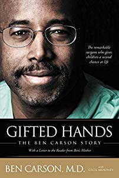
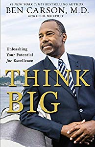
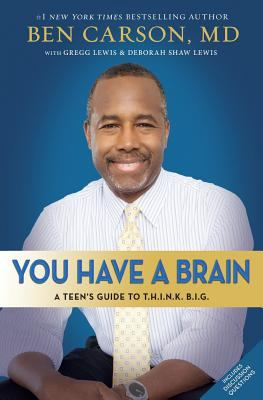

Gifted Hands by and about Ben Carson, M.D., is the inspiring story of an inner-city kid with poor grades and little motivation, who, at age thirty-three, became director of pediatric neurosurgery at Johns Hopkins University Hospital.
Gifted Hands will transplace you into the operating room to witness surgeries that made headlines around the world, and into the private mind of a compassionate,
God-fearing physician who lives to help others. In 1987, Dr. Carson gained worldwide recognition for his part in the first successful separation of Siamese twins joined at the back of the head --
an extremely complex and delicate operation that was five months of planning and twenty-two hours of actual surgery, involving a surgical plan that Carson helped initiate. Gifted Hands reveals a man with humility,
decency, compassion, courage, and sensitivity who serves as a role model for young people (and everyone else) in need of encouragement to attempt the seemingly impossible and to excel in whatever they attempt.
Dr. Carson also describes the key role that his highly intelligent though relatively uneducated mother played in his metamorphosis from an unmotivated ghetto youngster into one of the most respected neurosurgeons in the world.

This book is for you if your life is a series of shattered dreams. This book is for you if you have no dreams at all. It's for you if you've bought the lie that you'll never amount to anything. That's not true. Your life is BIG--far bigger than you've imagined. Inside these pages
lie the keys to recognizing the full potential of your life. You won't necessarily become a millionaire (though you might),
but you will attain a life that is rewarding, significant, and more fruitful than you ever thought possible. The author of this book knows about hardship. Ben Carson grew up in inner-city Detroit.
His mother was illiterate. His father had left the family.
His grade-school classmates considered Ben stupid. He struggled with a violent temper.
In every respect, Ben's harsh circumstances seemed only to point to a harsher future and a bad end. But that's not what happened. By applying the principles in this book, Ben rose from his tough life
to one of amazing accomplishments and international renown. He learned that he had potential, he learned how to unleash it, and he did. You can too. Put the principles in this book in motion. Things won't change overnight, but they will change.
You can transform your life into one you'll love, bigger than you've ever dreamed.

Eight proven principles to help you overcome your self-doubt, conquer your fear of the future, reverse negative thoughts about yourself, and hurdle any other obstacles standing between you and your dreams.
But instead of letting his circumstances control him, Dr. Carson took control of his attitude and actions, leading to his discovery of eight straightforward but revolutionary principles that helped shape his future.
In You Have a Brain, Dr. Carson unpacks the eight important parts of T.H.I.N.K. B.I.G.—Talent, Honesty, Insight, Being Nice, Knowledge, Books, In-Depth Learning, and God—and presents the stories of people who demonstrated those things in his life.
Through the advice and real-world examples laid out in these pages, you will learn how to incorporate these T.H.I.N.K. B.I.G. principles into your own life so that you, like Dr. Carson, can embrace an amazing future filled with incredible success.
What is America becoming? Or, more importantly, what can she be if we reclaim a vision for the things that made her great in the first place? In America the Beautiful ,
Dr. Ben Carson helps us learn from our past in order to chart a better course for our future. From his personal ascent from inner-city poverty to international medical
and humanitarian acclaim, Carson shares experiential insights that help us understand what is good about America where we have gone astray which fundamental beliefs have
guided America from her founding into preeminence among nations Written by a man who has experienced America s best and worst firsthand, America the Beautiful is at once alarming, convicting, and inspiring.
You ll gain new perspectives on our nation s origins, our Judeo-Christian heritage, our educational system, capitalism versus socialism, our moral fabric, healthcare, and much more.
An incisive manifesto of the values that shaped America s past and must shape her future, America the Beautiful calls us all to use our God-given talents to improve our lives, our communities, our nation, and our world.